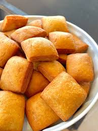

Our Menu
Breakfast
- Mandazi & Tea
- Freshly baked spiced mandazi served with hot Kenyan chai.

Chapati
- Soft Layered Chapati
- Golden-brown, flaky layered flatbread prepared with care.
Lunch
- Beef Pilau
- Fragrant rice cooked with tender beef and local spices.

Drinks
- Fresh Passion Juice
- Chilled natural passion fruit juice.
Lunch Prices
| Dish | Regular (KSh) | Large (KSh) |
|---|---|---|
| Beef pilau | 350 | 450 |
| Chapati and beans | 200 | 280 |
| Ugali and beef stew | 250 | 350 |
| Fresh passion juice | 150 (one size) | |